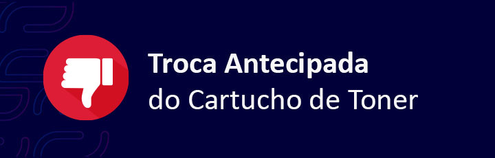

|

Atenção - Troca do Cartucho de Toner Sem Reposição Automática.Olá, tudo bem ? Foi observado que houve uma troca incorreta na data 20/06/2023 na impressora do IP 000.00.00.000, com o número de série ZZDDPNSIJSMMSS , no qual o toner atual havia 23% de sua carga! Impressora da marca Samsung, Modelo M-4070 Quando isso ocorre automaticamente cancela o envio do Toner Proativo para a impressora até que se justifique o motivo da troca. Para que seja evitado o cancelamento do envio, peço encarecidamente que sejá enserida uma justificativa no e-mail, se for uma falha técnica do toner vamos seguir com o envio do toner BDC, Coletando o toner com defeito e enviando um novo toner na unidade. Em caso de falha técnica na impressora, Erro de Unidade de Imagem (IMG) , vamos seguir orientação da abertura de um Chamado técnico por meio do Gazin Tech, para melhor auxilio e evitar futuros transtornos por falta de suprimentos, pois nem toda mancha ou borrões são causados pelo toner, Obrigado. |